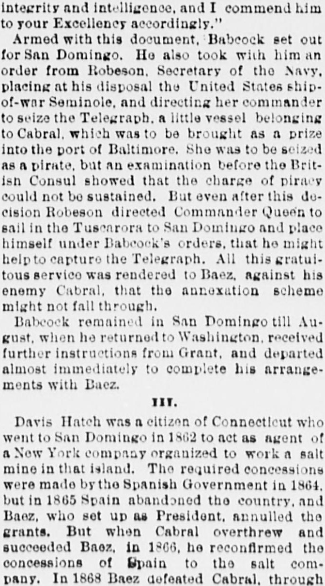
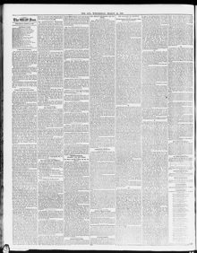

THE SCANDALS OF GRANTISM. The San Domingo Job—Its Inception, Prosecution, and Final Failure.LOS ESCÁNDALOS DEL GRANTISMO. El negocio de Santo Domingo—su inicio, su desarrollo y su fracaso final.
The Sun. New York [N.Y.], March 10, 1880. Page 2. Published by Benj. H. Day. A daily newspaper, 1833–1916.The Sun. New York [N.Y.], 10 de marzo de 1880. Página 2. Publicado por Benj. H. Day. Periódico diario, 1833–1916. View the originalVer el original


See the full pageVer la página completaArmed with a document and an order from Secretary of the Navy Robeson, Babcock utilized U.S. warships to assist Baéz against his enemy Cabral to prevent annexation schemes from failing. Meanwhile, Davis Hatch acted as an agent for a New York salt company whose concessions were annulled by President Baéz, reconfirmed by Cabral, and affected by subsequent political shifts between the two leaders.Munido de una credencial y una orden del secretario de Marina Robeson, Babcock recurrió a buques de guerra de los EE. UU. para apuntalar a Báez contra su adversario Cabral, resuelto a impedir el fracaso de los designios anexionistas. Por entonces, Davis Hatch fungía de apoderado de una compañía salinera neoyorquina cuyos privilegios fueron cancelados por Báez, revalidados por Cabral y sujetos a las continuas vicisitudes políticas entre ambos caudillos.
FULL TEXT:TEXTO COMPLETO:
The Sun March 10, 188010 de marzo de 1880
I.
"If Gen. Grant, Gen. Babcock, and others high in office in Washington are so well satisfied with the real value of our prospects, and feel safe in lending their names and influence to carry them out, I cannot for the life of me see why you should hesitate. It was our intention to have sent 1,200 shares of the stock of the San Domingo Copper Company to you, as soon as Knapp shall have signed the certificates, to be distributed among officials of influence in Washington. But from the tone of your letters I suppose we shall have to do our business through some other party."
These words, which seem like the idle boast of a confidence operator, are in reality the statement of a scandalous fact. They were written on the 21st of December, 1866, by Joseph W. Currier, then of New York, to a friend in Washington, who hesitated to embark in a scheme which looked to the raising of a million of dollars for the avowed purpose of mining copper in the island of San Domingo. Currier had been a quartermaster in the Union Army. He was speculative by nature, and circumstances made him impecunious. He was enthusiastic and credulous, but perhaps not deliberately dishonest. At this time, however, he was in the clutches of two unscrupulous knaves, who, years before, had gone from Massachusetts to the West Indies to teach the Dominicans tricks of which they never dreamt before. These were Joseph W. Fabens and William L. Cazneau. They were both natives of the Bay State. In 1863, Fabens, Cazneau, and Currier established the Great American West India Company, with an office at 5 Pine street, New York. Their rooms were fitted up in sumptuous style, and by the free use of printers' ink they succeeded in disposing of their worthless stock to the amount of $160,000. Then they closed their doors and disappeared. But they came again in 1866, scattering far and wide their prospectus of the Great San Domingo Copper Company. They were accompanied this time by Buenaventura Baez, the deposed President of the Dominican Republic, who had been driven from the island and was ready for any sort of a job which promised him a good living without work. These conspirators explained that Cabral's revolution had destroyed the Great American West India Company, but that the present corporation rested on a secure basis. To all doubting inquirers they whispered, "Gen. Grant is in it!" On the strength of his name they raised money from investors. Fabens took $30,000 and started for Africa to buy camels for the copper mines. He was accompanied by Baez. The 1,200 shares of stock were duly distributed among "officials of influence in Washington," and $200,000 was raised by the sale of shares. Then the doors of the office were closed again, and the adventurers sought safety in flight. They returned to San Domingo, where Baez re-established himself in the Presidency. There they remained till President Grant was inaugurated, and then they began once more their swindling operations in good earnest.
II.
When Buenaventura Baez resumed control of affairs in the Dominican Republic, he seems to have had a premonition that his stay would be short, and that it behooved him to fill his purse while the opportunity lasted. He made a concession to Edward H. Houtmont for the working of the coal mines of Samana, for which he was to receive a loan of £420,000 from Lawson & Co. of London. This was in May, 1869; but in July, 1868, the notorious Fabens had received a sort of general geological and mineralogical concession, under which he was to have one-fifth of all the public lands. Cazneau had received a concession for the National Bank of San Domingo, and also for the copper mines and the wharf frontage on the Bay of Samana. Having sold most of the franchises at his disposal, and given away the rest, the idea quietly dawned on the mind of Buenaventura Baez that he would sell out all his right, title, and interest—the right of a traitor, the title of a usurper, and the interest of a plunderer—in the island of San Domingo to the Government of the United States, for a good round sum in cash, while he sought a home in some distant clime. Through Cazneau and Fabens he communicated his plans to the Washington authorities, where they were received with great favor.
On the 13th of July, 1869, President Grant addressed a letter to his "great and good friend," as he called Baez, in which he said: "Deeming it desirable to satisfy my curiosity in respect to your interesting country by obtaining information from a source upon which I rely, I have for this purpose appointed Brevet Brig.-Gen. Orville E. Babcock of the army of the United States to proceed to the Dominican Republic in the character of a special agent. Having been one of my aides-de-camp while I commanded the armies of the United States, and having since been intrusted by me with confidential business of importance, I have entire confidence in his integrity and intelligence, and I commend him to your Excellency accordingly."
Armed with this document, Babcock set out for San Domingo. He also took with him an order from Robeson, Secretary of the Navy, placing at his disposal the United States ship-of-war Seminole, and directing her commander to seize the Telegraph, a little vessel belonging to Cabral, which was to be brought as a prize into the port of Baltimore. She was to be seized as a pirate, but an examination before the British Consul showed that the charge of piracy could not be sustained. But even after this decision Robeson directed Commander Queen to sail in the Tuscarora to San Domingo and place himself under Babcock's orders, that he might help to capture the Telegraph. All this gratuitous service was rendered to Baez, against his enemy Cabral, that the annexation scheme might not fall through.
Babcock remained in San Domingo till August, when he returned to Washington, received further instructions from Grant, and departed almost immediately to complete his arrangements with Baez.
III.
Davis Hatch was a citizen of Connecticut who went to San Domingo in 1862 to act as agent of a New York company organized to work a salt mine in that island. The required concessions were made by the Spanish Government in 1864, but in 1865 Spain abandoned the country, and Baez, who set up as President, annulled the grants. But when Cabral overthrew and succeeded Baez, in 1866, he reconfirmed the concessions of Spain to the salt company. In 1868 Baez defeated Cabral, through an insurrection, and returned to power. In May, 1869, the city of Barahona, where Hatch resided, was deserted by Baez, and taken possession of by Cabral's forces. It was retaken in the following August by Baez, who thereupon caused the arrest of Hatch on the ground that he had sided with Cabral. He was condemned to death by a court martial, and was then pardoned by Baez on condition that he should immediately leave the island. He was quite willing to go, but was not permitted to do so. He was kept a close prisoner from the 29th of August, 1869, till the 15th of March, 1870, in flagrant violation of his rights as an American citizen. During the period of his unlawful imprisonment Babcock visited the island. J. Somers Smith was at that time the Government's commercial agent at San Domingo, and in the following despatch to the State Department he tells what happened:
On the 31st of August the United States ship Tuscarora arrived from Key West, when Commander Queen called on me. I handed him a memorandum regarding Mr. Hatch, and expressed my desire that he would proceed to Barahona to see Mr. Hatch and learn the particulars of his case. The Commander informed me that, notwithstanding his willingness to comply with my request, he was powerless to act in the matter, as his instructions placed the ship at the disposal of Gen. Babcock. On my communicating with Gen. Babcock he did not seem disposed to cooperate, appearing not to regard the case in as serious a light as I do, from my knowledge of the Dominican character. It is unfortunate for Mr. Hatch that since Gen. Babcock has been here he has been in close companionship with Mr. Cazneau, who is an enemy of Mr. Hatch, as he, Mr. Hatch, furnished the information which caused the rejection of Cazneau by the Senate, some three years ago, when his name was sent in for a position in this country.
When the Senate of the United States sent for a copy of the correspondence between Mr. Smith and the State Department, the alleged communications were transmitted, but the foregoing paragraph, and all others relating to Babcock, were carefully stricken out. This garbling of official papers for the protection of an Executive favorite aroused the indignation of Mr. Sumner and other Senators.
Mr. Hatch, an American citizen, was kept in a dungeon for six months, under no process of law, because Baez, Fabens, Cazneau, Babcock, and Ingalls, who were in league with the President of the United States, were afraid of him. He knew more about the annexation scheme than they could safely allow to be told. He was a ready writer, and had corresponded occasionally for the New York Times. If he should unfold the facts—the double sale of valuable franchises, the jobbery and fraud which characterized the whole proceeding—the negotiations would come to a sudden end. Knowing this, the conspirators, safe in the protection of Grant's favor, locked him up. For his boldness in calling the attention of the State Department to this inexcusable outrage, J. Somers Smith was removed, and Raymond H. Perry was sent to San Domingo in his place as commercial agent.
IV.
On the fourth day of September, 1869, the bases of a treaty between the United States and the Dominican Republic were reduced to writing as agreed upon—so runs the official document—"by Gen. Orville E. Babcock, Aide-de-camp to his Excellency, Gen. Ulysses S. Grant, President of the United States of America, and his special agent to the Dominican Republic, and Mr. Manuel Maria Gautier," Secretary of State, &c., of the Dominican Republic.
The first article of this protocol will bear careful reading:
1. His Excellency, Gen. Grant, President of the United States, promises, privately, to use all his influence, in order that the idea of annexing the Dominican Republic to the United States, may acquire such a degree of popularity among members of Congress as will be necessary for its accomplishment; and he offers to make no communication to that body on the subject until he shall be certain that it will be approved by a majority. The acceptance of annexation will oblige the United States to pay the Dominican Republic the sum of $1,500,000 in coin, in order that the republic may, as a State, pay its public debt, which is estimated at the sum of $1,500,000 in coin; and the Dominican Republic, on its part, agrees to conform its Constitution to those of other States of the Union. In the event that the Dominican Republic debt should exceed $1,500,000 in coin, the excess shall be charged to the Dominican State.
In commenting on this in the Senate, Charles Sumner spoke as follows:
Here you see how this young officer, undertaking to represent the United States of America, entitles himself Aide-de-camp to his Excellency, Gen. Ulysses S. Grant, President of the United States of America, and his special agent to the Dominican Republic. Do you know any such officer in our Government as Aide-de-camp to his Excellency, the President of the United States? Does his name appear in the Constitution, in any statute, in the history of this republic anywhere? If it does, your information, sir, is much beyond mine. I have never before met any such instance. I believe this young officer stands alone in using this lofty designation. I believe still further that he stands alone in the history of free governments. I doubt whether you can find a diplomatic paper anywhere in which any person undertaking to represent his Government has entitled himself aide-de-camp to the chief of the State. The two duties are incompatible, according to all the experience of history. No aide-de-camp could be commissioned as a Commissioner, and the assumption of this exalted and exceptional character by this young officer shows at least his inexperience in diplomacy. However, he assumed it, and it doubtless produced a great effect with Basz, Cazneau, and Fabens, the three confederates.
By the other articles of this protocol (2) the price of Samana was fixed at $2,000,000. (3) Grant agreed to pay $150,000 down. (4) The United States Government agreed to protect Baez during the negotiations. (5) Absolute secrecy was enjoined. (6) Baez agreed to solicit his Senate to sell Samana.
With this basis for a treaty Babcock returned to Washington and left poor Hatch in prison.
V.
Raymond H. Perry, the newly-appointed commercial agent, sailed for San Domingo on the 3d of November, 1869. He found on the steamer "Colonel" Fabens, to whom Babcock had given him a letter of introduction. Perry was ignorant of diplomacy, and was a stranger in San Domingo. He was a native of Rhode Island, and a relative of the famous Commodore. He had served in the war, winning distinction by his courage, but involving himself in several serious quarrels. After the war he went to Mexico to fight against Maximilian. When the empire was overthrown he returned to the United States, and was employed on special duty by Gen. Sheridan in Louisiana. He then drifted into Texas and served for a time as Chief of Police at Galveston. In October, 1869, he applied for the office of United States Marshal for the Western District of Texas. The conspirators in Washington, judging from his antecedents that he must be an adventurer, thought they could use him, and therefore resolved to send him to San Domingo. They discovered in due time that they had caught a Tartar.
On the outward voyage Fabens filled Perry with false accounts of the state of affairs. He warned him against Hatch, who, he said, was a dangerous and wicked man. He told him that Cazneau was a person of great wealth and influence in San Domingo, and that he was in regular correspondence with the White House. He urged him to seek Cazneau's friendship, as the surest way of making a fortune for himself.
Mr. Perry relieved Mr. Smith on the 16th of November, and learned from him that Cazneau was a swindler, but that he was running the Dominican Government; that he had been a bitter Confederate during the war, but was then a pronounced friend of Grant. Perry also learned the facts in the case of Davis Hatch, and immediately resolved to seek his release. Two days after his arrival Perry was told by Fabens that a man-of-war would arrive that morning with Gen. Babcock on board. Babcock came, accompanied by Gen. Rufus Ingalls, bearing with him a commission authorizing Perry to sign on behalf of the United States the treaty which he brought with him, and which was substantially the same as the protocol. They went ashore and visited Buenaventura Baez. Cazneau and Fabens were present at this and all subsequent interviews. When the treaty was read, Cazneau coolly proposed to draw up two separate papers, one to place before the people of San Domingo to influence the election, and the other before the United States Government to keep them quiet. Against this crime Perry sturdily protested, though Baez argued that if the elections went against him he should lose his life. Finally this part of the scheme was abandoned, but Babcock, before leaving the island, told Perry that he must trust implicitly to Cazneau and Fabens; that they represented large interests, and that he had large interests with them. Cazneau also told him (this is all sworn testimony) that Babcock and Ingalls had interests in real estate with him, and that he, Fabens, and their friends in New York had originated the idea of annexation.
Perry bluntly told Babcock that this whole business looked to him like foul play; that Cazneau appeared to him dishonest, and that Hatch ought to be released. Babcock urged him not to release Hatch, told him he was a dangerous man, and that his imprisonment was necessary to the treaty's success.
After the departure of Babcock, Perry tried, in good faith, to carry out the instructions he had received from Washington. He placed no obstacle in the way of annexation, but sought to promote the project. He saw that the election by which the Dominicans were made to approve the plot was carried by force and fraud. But he permitted Cazneau and Fabens to dictate his despatches on that subject. Presently, however, the indications of foul play multiplied around him, and he resolved to reveal the truth to the Government. He wrote at first private letters to the Secretary of State and to Babcock. The Secretary did not reply. But Babcock and Ingalls hastened to write, telling him to leave all personal matter out of his official communications, and to speak encouragingly of annexation. When Perry found out that Cazneau was about to secure, through the Dominican Senate, a large tract of public land in violation of the treaty, he addressed a communication to that body, warning it not to make the grant. By the rules of diplomacy he should have sent the communication through our Government, but he was not versed in court etiquette, and his indignation would not brook delay. Cazneau was inclined to call him to sharp account for this interference, and, as usual, was backed by the Washington authorities. He gave Perry to understand that he knew more about the policy of the United States than its accredited representative.
When the success of the treaty was supposed to be assured, and not before, Davis Hatch was released. On the 13th of May, 1870, he addressed from the Island of St. Thomas a memorial to Congress, claiming damages in the sum of $50,000, and asking the intervention of our Government to help him in obtaining it. A committee, consisting of James W. Nye, J. M. Howard, George H. Williams, Willard Warner, Carl Schurz, O. S. Ferry, and George Vickers, was appointed to inquire into the matter. Raymond H. Perry appeared before this committee on the 9th of June, and testified to some of the facts herein set forth. This evidence astonished the country and brought the San Domingo scheme into disrepute. Grant, Babcock, Baez, and the others found it necessary to postpone their operations.
VI.
In December, 1870, President Grant, in his annual message, asked the appointment of a commission to visit San Domingo. The Commission was accordingly appointed, and after spending nearly $100,000 of the public money, its members returned and made a glowing report to Congress, earnestly urging annexation. But in spite of the glowing picture which these enthusiasts painted, Perry's testimony was fresh in the public mind. Thereupon the conspirators resolved to destroy this objectionable witness.
In February, 1871, W. B. Moore, who subsequently figured in the whiskey frauds, came up from Texas, where he had been serving as a carpet-bag assessor of internal revenue, with a requisition from E. J. Davis, the carpet-bag Governor, for the arrest of Raymond H. Perry for murder. This atrocious charge was based on the affidavit of one ignorant and irresponsible man, who swore that about the middle of December, 1865, he heard that a murder had been committed at a certain place, and on approaching the river bank he saw signs which satisfied him that the body of the murdered man had been thrown in. But he did not see the body, and he saw no one who had seen it. Nor was any one missing. But a band of marauders had been through that region a few days previous, and they were said to be under the command of one Raymond H. Perry. On such testimony as that Grant and Babcock proposed to try an innocent man for murder.
Babcock gave Moore a letter of introduction to Col. Whitley, Chief of the Secret Service, and Moore addressed Whitley in these written words:
I have a requisition from the Governor of Texas for the arrest of Raymond H. Perry, the ex-commercial agent for San Domingo, who is charged with murder, highway robbery, burglary, and horse stealing. As the integrity of the President is questioned, through the misrepresentations of this fugitive from justice, it is highly important that his real character should be exposed at once, and I depend upon you to learn his whereabouts and bring him to justice.
Whitley soon discovered that Perry was in Rhode Island, and that to secure his arrest certain papers would have to accompany the requisition. Moore then wrote:
The requisition upon the Governor of Rhode Island has no papers attached, but those accompanying the requisition on the Chief Justice of this district can be carefully detached and attached to the former, if it is necessary to make the arrest in Rhode Island. * * * It is important that the arrest be made before the San Domingo matter comes up again in Congress, that the integrity of the President may be fully vindicated.
Nettleship, who figured in the safe burglary conspiracy, was sent on to Rhode Island, and found Perry at his home, near Bristol. He reported to his chief: "Perry is nobody's fool. There is no danger of his going away; but he is not the man to be taken by force without the papers are all right."
The papers were all wrong, as the conspirators well knew, and Nettleship's discovery of Perry's courageous character frustrated the plot for kidnapping him. While he remained at large and was the custodian of so many dangerous secrets, it was not safe to prosecute the annexation scheme. It was abandoned for the time being, with a view of renewing it at no distant day. But Buenaventura Baez was shortly deposed, and the foul partnership between him and the Washington authorities was thus permanently terminated.
So ended Grant's attempt to annex San Domingo to the United States.